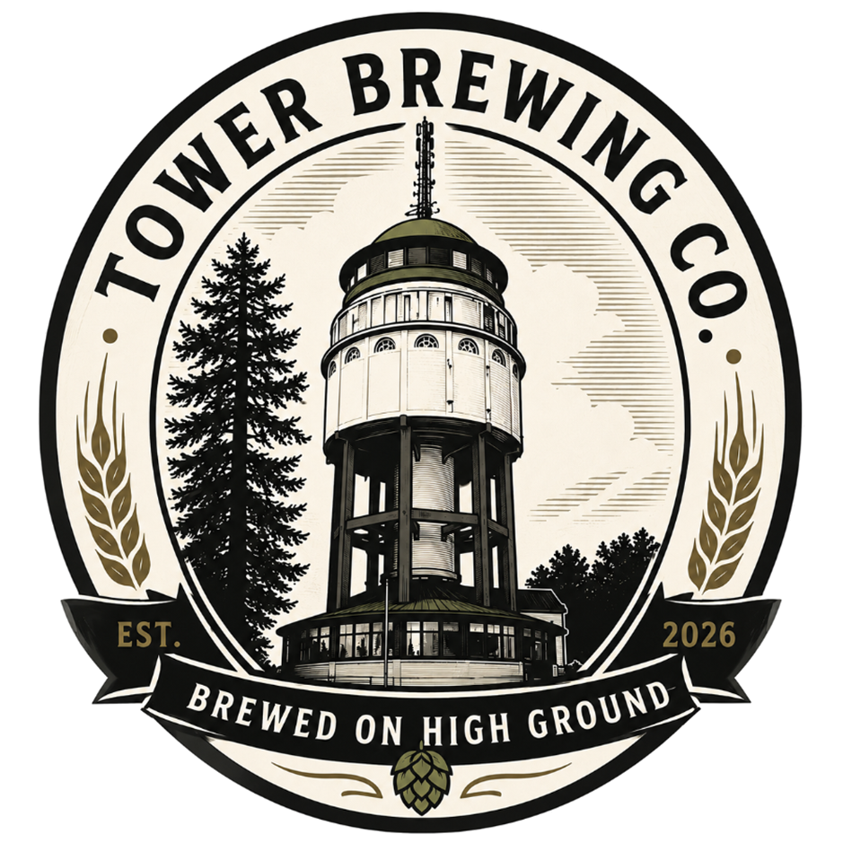

Tower Brewing company on pieni ammattilaisten perustama pienpanimo
Mikkelin Naisvuoren tornin varjosta. Fyysinen sijaintimme on osa onnistunutta konseptiamme.
Saimaan järvi ja metsien syvyys saattaa meitä siihen puhtauteen ja makujen harmoniaan, joka on
mahdollista ainoastaan syvällä suomalaisessa järvimaisemassa.
Inspiraatiomme lähde on se savun ja tuoreen koivun tuoksu, joka on mahdollista saavuttaa vain
keskikesän juhlissa, savusaunan jälkeisellä viilennysreissulla Saimaan rannalla hyvä vehnäolut kädessään.